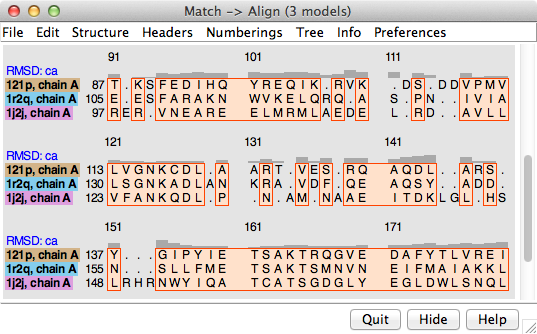
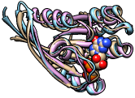

Match -> Align creates a sequence alignment from a structural superposition of proteins or nucleic acids in Chimera. Residue types are not used, only their spatial proximities. Iterations of refitting the structures using the sequence alignment and generating a new sequence alignment can be performed.
|  |
|  |
The output sequence alignment is automatically shown in Multalign Viewer, and root-mean-square deviations (RMSDs) over the fully populated columns of the alignment and other structural similarity scores (SDM, Q-score) are reported in the Reply Log.
For an informal introduction, see the Superpositions and Alignments tutorial. See also: Align Chain Sequences, MatchMaker, Multalign Viewer, and
Tools for integrated sequence-structure analysis with UCSF Chimera. Meng EC, Pettersen EF, Couch GS, Huang CC, Ferrin TE. BMC Bioinformatics. 2006 Jul 12;7:339.There are several ways to start Match -> Align, a tool in the Structure Comparison and Sequence categories.
Chains to be included in the sequence alignment should be chosen from the top section of the panel.
Iteration Parameters:
- Iterate alignment:
- at most [N] times (default 3) - refit and then generate a new sequence alignment N times (or fewer, if convergence is reached)
- until convergence - refit and then generate a new sequence alignment until the number of fully populated columns no longer increases
- Superimpose full columns:
- across entire alignment - refit the structures using all fully populated columns of the sequence alignment
- in stretches of at least [L] consecutive columns (default 3) - refit the structures using only the fully populated columns in consecutive stretches of L or more
- Reference chain for matching [chain] - which structure should remain fixed as the others are matched to it
Clicking Apply (or OK, which also dismisses the dialog) initiates the calculation.
The output sequence alignment is automatically shown in Multalign Viewer and can be saved to a file from that tool. The fully populated columns are highlighted as a region (colored boxes). Clicking the region will select the corresponding parts of the structures, in effect their common cores. The “RMSD: ca” header shows the spatial variation per column.
The number of fully populated columns in the alignment and the corresponding pairwise and overall RMSDs are reported in the Reply Log. The structural similarity measures SDM and Q-score are also given. Structures are not refit using the final sequence alignment; rather, the existing superpositions are simply evaluated over the fully populated columns of that alignment.
Close dismisses the dialog without generating an alignment. Help opens this manual page in a browser window.
Match -> Align reports root-mean-square deviations (RMSDs) calculated using one atom per residue: CA in amino acids, C4' in nucleic acids. However, RMSD values alone are not meaningful, because a lower RMSD can be achieved simply by using fewer residues to calculate it, even if the superposition stays exactly the same. When an RMSD value is used to describe structural similarity, the number of positions used in the calculation (the alignment length) should also be reported.
Several measures that normalize RMSD by alignment length and overall sequence length have been developed. Besides RMSDs, Match -> Align calculates and reports the Structural Distance Measure (SDM) and the Q-score (Q for quality). These scores depend not only on the structural similarity, but also on how well the structures are superimposed and the cutoff distance used to equivalence residues. A larger cutoff will increase both the alignment length and the RMSD.
The SDM is described in:
Molecular anatomy: phyletic relationships derived from three-dimensional structures of proteins. Johnson MS, Sutcliffe MJ, Blundell TL. J Mol Evol. 1990 Jan;30(1):43-59.SDM values were found to be linearly related to sequence-derived distances and to yield similar phylogenetic trees. As a distance measure, SDM is zero for identical structures and increases as the similarity decreases. The cutoff used for residue pairing is included in the SDM equation; values to be compared with any previously published values should be calculated with the same cutoff distance. The original publication used a cutoff of 3.5 Å.
The Q-score is described in:
Secondary-structure matching (SSM), a new tool for fast protein structure alignment in three dimensions. Krissinel E, Henrick K. Acta Crystallogr D Biol Crystallogr. 2004 Dec;60(Pt 12 Pt 1):2256-68.Q-scores were found to agree fairly well for superpositions (of the same structures) from different servers. Values range from zero for completely dissimilar or unsuperimposed structures to 1 for identical structures. The Q-score equation includes an empirical constant of 3.0 Å regardless of the cutoff used for residue pairing.
Note that SDM and Q-score were developed as pairwise measures. Their formulas easily generalize to the multiple case, and this generalization has been implemented in Match -> Align, but keep in mind that only pairwise scores (obtained by running Match -> Align on two structures at a time) can be compared to previously published values.
In most cases, a semi-heuristic algorithm is used. However, a modified Needleman-Wunsch procedure (dynamic programming) is used for the case of two chains and no allowance for circular permutation:
The score for aligning a pair of residues is: The gap penalty is zero, since for this application the spatial proximity should be more important than adjacency in sequence; that is, residues farther apart than the distance cutoff should not be aligned.This process determines the sequence alignment that best represents the structural alignment.
{kind=link}